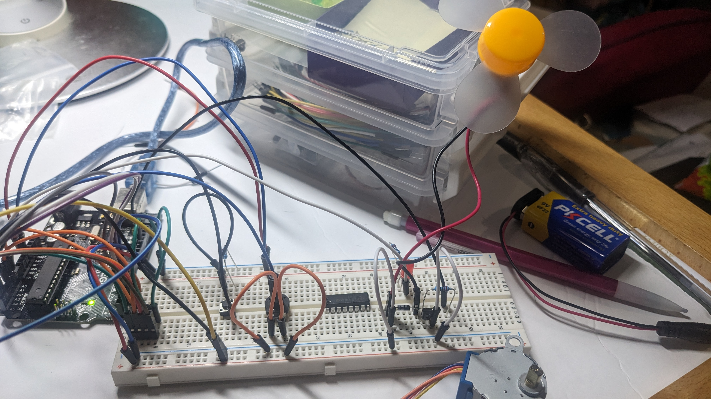
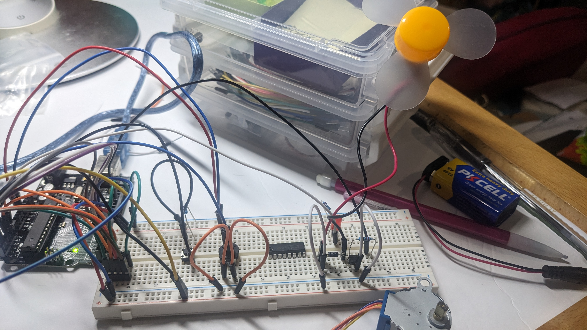
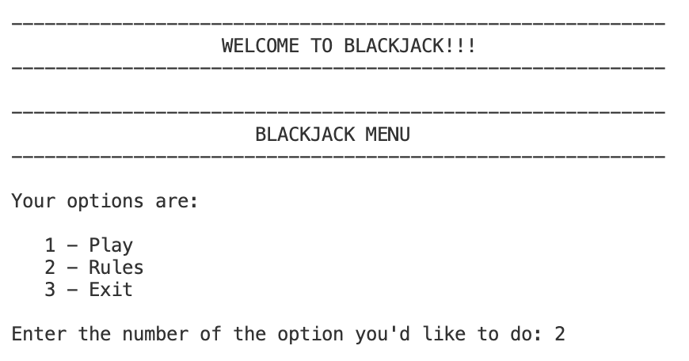
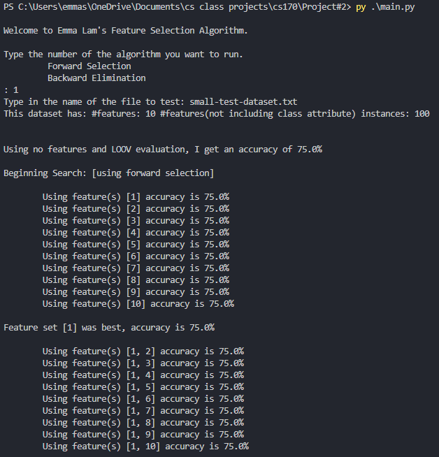
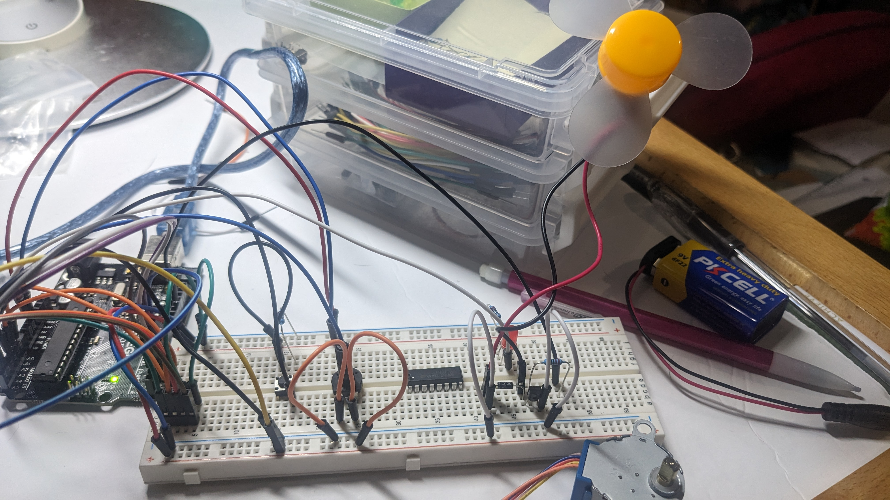
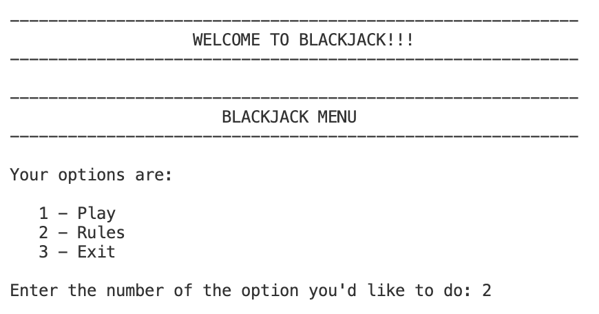
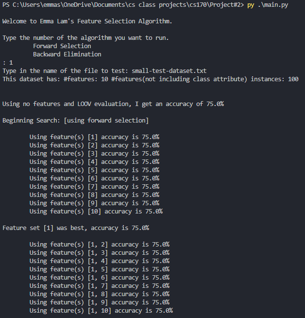

Emma Lam
Hi! I’m Emma Lam, a 4th-year Computer Science with Business Applications major at the University of California, Riverside, with an interest in cybersecurity. My academic journey, combined with hands-on project experience, has shaped me into a detail-oriented
problem solver. Along with my strong skills in being a fast learner, multitasking, and communication, I am confident in my ability to contribute to the team and achieve outstanding results.
Within my major, I am able to learn more in depth on the concepts and applications of computer science, along with various elective fields. I have taken classes in Machine Learning, Data Structure and Algorithms, Information Retrieval, Artificial Intelligence, Logic Design and Embedded Systems. Together, these courses have provided me with a well-rounded understanding of computer science and its many applications, from machine learning to embedded systems, each of which plays a critical role in the ever-evolving world of cybersecurity. These topics allowed me to explore how various fields of computer science can intersect and contribute to solving the complex challenges we face in security today.
On the business side, I've had experience in Business Simulation, Production and Operations Management, Project Planning and Control, Marketing, Financial Management, and Decision Analysis. My coursework has provided me with the tools and frameworks necessary to analyze, plan, and make data-driven decisions that drive organizational success. Together, these courses have provided me with a strong foundation in business strategy and management, equipping me with the analytical tools needed to solve complex business challenges. This knowledge, combined with my technical skills in computer science, allows me to approach cybersecurity not only from a technical perspective but also with a keen understanding of the business implications, ensuring that security measures align with organizational goals and priorities.
Beyond academics, I’m actively involved in student organizations such as the Cyber@UCR, where I participate in Capture the Flag (CTF) challenges and cybersecurity workshops. These events have allowed me to enhance my skills in ethical hacking, reverse engineering, and network security. I have also attended and participated in a number of hackathons over California and online challenges that taught me how to communicate and work effectively with my teammates as well a prototype ideas and deliver functional results. During these challenges, I get a change to engage in hands-on learning and experimenting with new technology, tools, and frameworks.
When I’m not coding or learning about the latest security vulnerabilities, you can find me knitting, hiking, or searching for the best food in town. Knitting teaches me patience and precision—two critical traits for identifying subtle vulnerabilities in code. Hiking pushes me to be adaptable and persistent, much like staying ahead of ever-evolving cyber threats. And my love of good food? It keeps me curious and willing to explore new ideas, just as a good analyst must constantly seek innovative solutions to emerging problems.
With a unique blend of technical skills, business acumen, and diverse hobbies that nurture focus, adaptability, and creativity, I believe I’m well-equipped to excel as a cybersecurity analyst. I’m excited to contribute my energy, passion, and analytical mindset to a forward-thinking organization committed to protecting critical data and infrastructure.
Experience
Secretary
• Researched and developed curriculum for teaching critical thinking and tools for optimal lesson spacing.
• Conducted interviews with educators and researchers.
• Lead development of missions, vision, and 3-year strategic action plan. Recruit and engage board members, volunteers, and philanthropists.
Farmers Market Clerk
• Assisted customers with product inquiries, handled transactions, and ensured a positive shopping experience.
• Assisted in managerial responsibilities during rush hours, maintaining a continuously high level of productivity.
• Assisted in reopening a connecting shop, training new employees while maintaining inventories, replenishing stocks, and providing customer serviceAssisted.
Independent Contractor
• Developed strong skills in time management and self-motivation while working independently.
• Successfully completed projects within deadlines, demonstrating my ability to work independently and deliver high-quality results.
• Created visually appealing presentations, enhancing communication and understanding.
• In-depth research on various topics, gathering and analyzing information to provide comprehensive insights.
Education
University of California Riverside
University of California Riverside
Portfolio
 



 